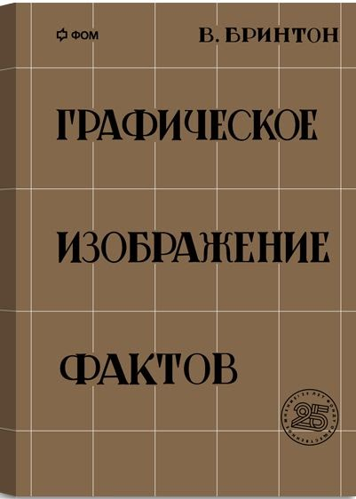
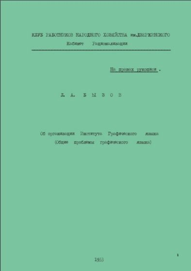
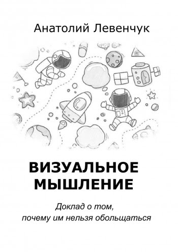
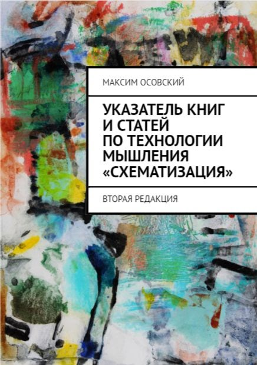
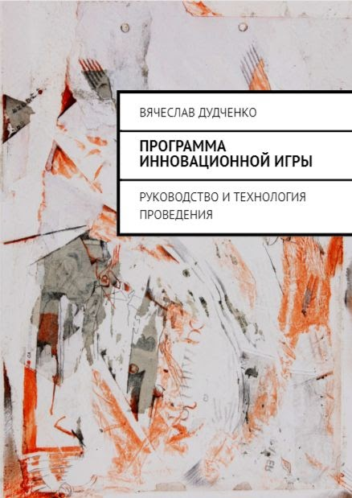
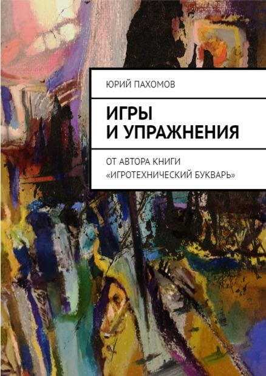
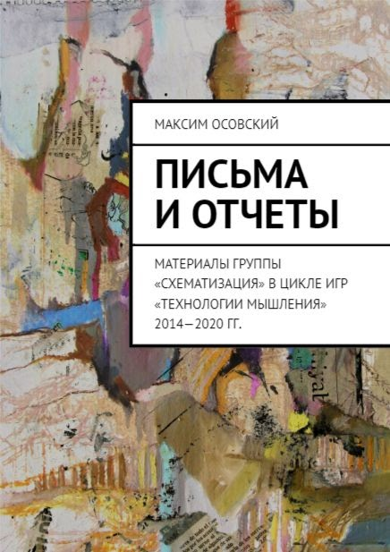
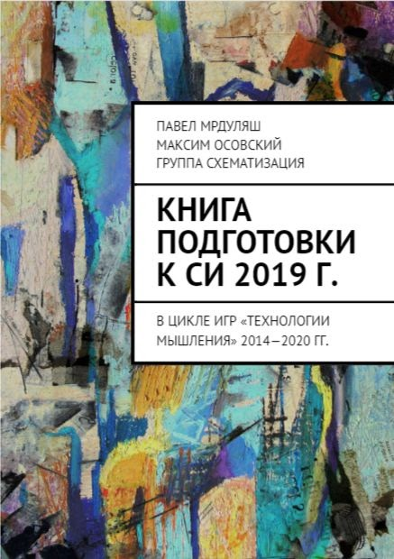
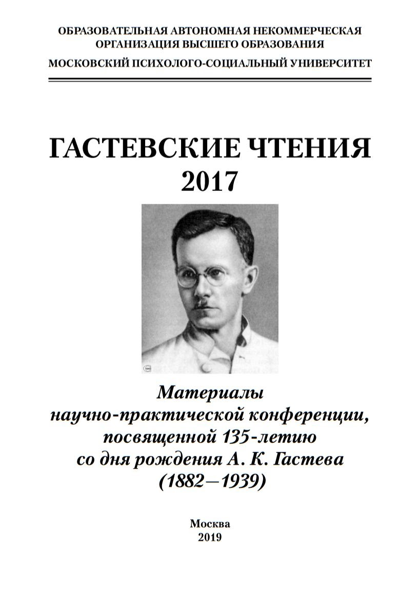
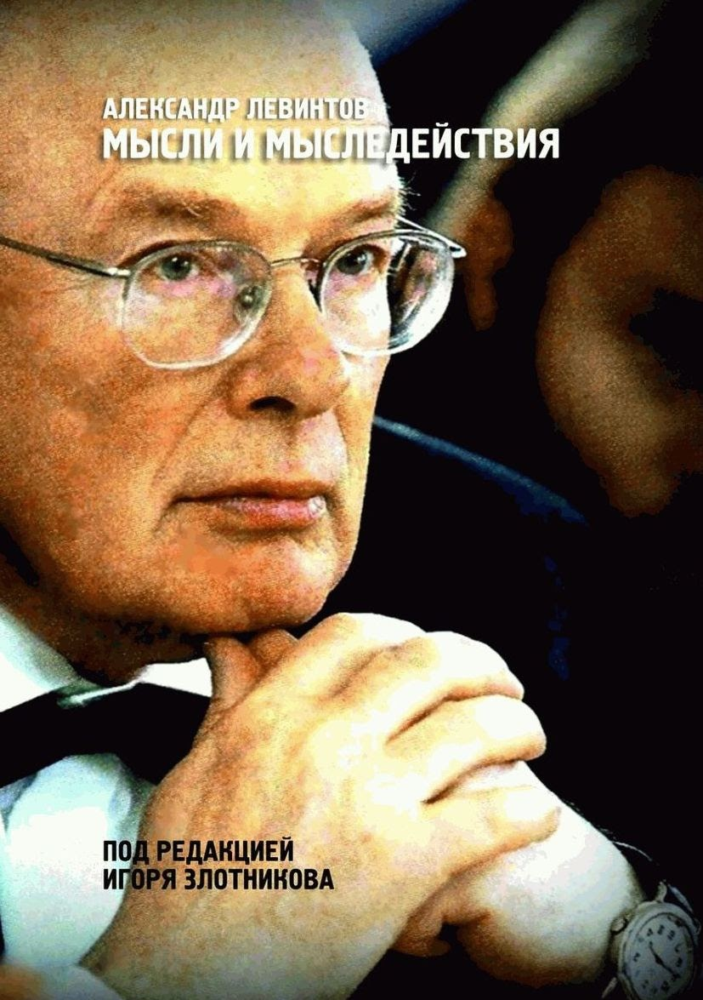

Издательство










- В.Бринтон "Графическое изображение фактов" (репринт), 2017 (1927), ISBN 978-5-4465-1421-2
- Доклад Л.А.Бызова "Об организации Института Графического языка" (репринт), 2017 (1933) 39 с.
- М.Осовский Указатель книг и статей по технологии мышления «Схематизация» : 2017, 40 с. ISBN 978-5-4483-6448-8
- Семин С.А. Время коммуникации, 2016, 203 с.
- Сборник докладов по схематизации (1996-2014) 352 с.
- СХЕМАТИЗАЦИЯ Сборник текстов (1992-2013) 384 с.
- КОНФЕРЕНЦИИ И СЕМИНАРЫ Сборник материалов (2007-2011) 389 с.
- Сборник докладов на школе "Технологии мышления. Схематизация" 2015 414 с.
- П.Г. Щедровицкий Введение в синтаксис и семантику графического языка СМД-подхода 1712 с.
- Сборник ММК в лицах 673 с.
- В.Дудченко "Программа инновационной игры" 2017, 188 с.
- Ю.Пахомов "Игры и упражнения" 2018, 230 с.
- А.Левенчук "Визуальное мышление" (2018)
- Мрдуляш, Осовский. "Книга подготовки к СИ 2019 г." 2018, 126 с. ISBN 978-5-4493-6764-8
- Осовский. "Письма и отчеты. Материалы группы за 2012-2018 гг" 2018, 220 с. ISBN 978-5-4493-6982-6
- Гастевские чтения, 2017 2019, 94 с.
- А.Е. Левинтов "Мысли и мыследействия" Под ред. И.Злотникова, 2019, 356 с.